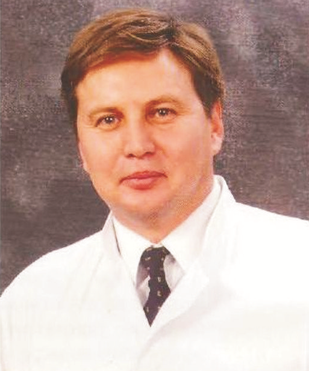
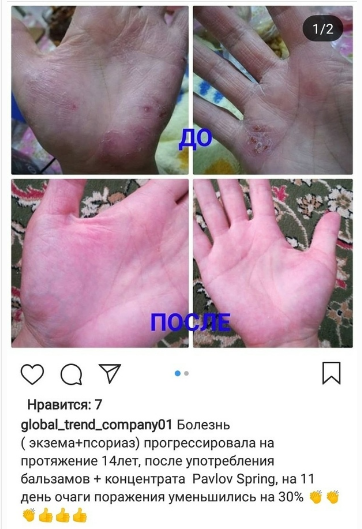
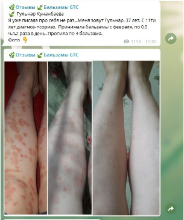

Растительный концентрат Pavlov Spring помимо убихинона коэнзима Q-10 содержит активные био-вещества, которые усиливают эффективность концентрата за счет витаминов группы В, биофлавоноидов, витаминов группы Р, кальция пантотенат. Уникальность концентрата в том,что органический убихинон Q-10, не распадается годами, дает энергию клетке, позволяя ей жить в десятки раз дольше, без побочных эффектов, а также улучшает все биохимические, гормональные и ферментативные процессы. Содержит более 250 макро и микро элементов, биологически активных веществ, 88 ксантонов, а также в его состав входят все витамины. При изготовлении концентрата используется новейшая технология обработки концентрированным янтарным спектром солнечного света, усиливающий его свойства. Концентрат обладает бактериостатическим, био-синтетическим, информационным, энергетическим свойством. Имеет очищающий эффект, выводит свободные радикалы, ускоряет процесс исцеления, выводит шлаки из организма, яды и токсины, обладает обезболивающим, противопаразитарным, а также мягким седативным действием. Активирует мочегонный, пото и слабительный эффект. Улучшает работу всех систем организма.
Состав концентрата:
Концентрат «Pavlov spring» представляет собой комплекс из 189 компонентов целебных ингредиентов, это:
• коэнзим Q-10;
• берёзы почки – 0,0120 г.;
• боярышника плоды – 0,0100 г.;
• боярышника цветки –0,0140 г.;
• брусника листья – 0,0170 г.;
• валерианы корень – 0,0140 г.;
• верблюжья колючка– 0,0089 г.;
• девясил корень и корневища – 0,0015 г.;
• кора дуба – 0,0023 г.;
• зверобой трава – 0,0150 г.;
• крушина кора – 0,0038 г.;
• лопух корень – 0,0046 г.;
• липы цветки – 0,0038 г.;
• мелисса трава – 0,0035 г.;
• мяты перечной лист – 0,0018 г.;
• корневища пармелии – 0,0031 г.;
• полпала трава – 0,0005 г.;
• пижма – 0,0015 г.;
• пустырника трава – 0,0020 г.;
• ромашки цветки – 0,0030 г.;
• сена лист – 0,0013 г.;
• солодки корень – 0,0170 г.;
• черники побеги – 0,0680 г.;
• софора японская плоды – 0,0028 г.;
• толокнянки листья – 0,0050 г.;
• чага – 0,1480 г.;
• чабрец трава – 0,0020 г.;
• череда трава – 0,0016 г.;
• шалфея листья – 0,0014 г.;
• шиповник – 0,0048 г.;
• эвкалипт листья – 0,0019 г.;
• вода лечебно-профилактическая по коррекции холестерина в крови «SPA-SKY» – до 50 мл.
Полный состав “Pavlov spring » является изобретением компании (ноу-хау) и не подлежит разглашению!
Содержит более 250 макро и микро элементов, 88 ксантонов, также в состав концентрата входят все витамины!
Nano balsam “PERFECTO LUX” — высококонцентрированный продукт, который представляет собой комплекс целебных природных ингредиентов. В нем полностью сохранены все свойства натурального продукта. Оказывает омолаживающее, общеукрепляющее, тонизирующее действие. Нормализует обмен веществ и энергетический обмен. Повышает умственную и физическую активность. Оказывает положительное действие на состояние кожи и волос. Применяется как вспомогательное средство для предотвращен преждевременного старения организма, при истощении, слабости, после перенесенных заболеваний. Изготовлены они из 100% натуральных продуктов на основе концентрата Pavlov Spring с применением нанотехнологий, не содержит ГМО! Ниже перечисленные ценные свойства использовали специалисты фармацевтики для создания серии этих препаратов, благодаря чему они приобретают универсальность, проявляя свои целебные свойства при употреблении их как здоровыми, так и очень больными людьми, и даже маленькими детьми и беременными женщинами.
Состав концентрата:
Концентрат «PERFECTO LUX» представляет собой комплекс из 189 компонентов целебных ингредиентов, это:
• антиоксиданты;
• полифенолы;
• антоцианы;
• флавоноиды;
• резвератрол;
• заменимые и незаменимые жирные и фруктовые кислоты;
• минеральные вещества;
• пектины и волокна;
• ферменты;
• витамины (В1, В2, В3, Е и другие);
• около 30-ти макро- и микроэлементов (основные из них калий, кальций, фосфор, железо, марганец, медь);
• органические кислоты;
• фитонциды;
• белки;
• гормональные и другие биологически активные вещества в количествах и комбинациях, наиболее подходящих для нашего организма;
• минеральные вещества (калий, фосфор, кальций);
• ксантоны.
Полный состав Nano balsam “PERFECTO LUX” является изобретением компании (ноу-хау) и не подлежит разглашению.
Nano balsam “VITALITY LUX” — высококонцентрированный продукт, который представляет собой комплекс целебных природных ингредиентов. В нем полностью сохранены все свойства натурального продукта. Стимулирует и гармонизирует деятельность желез внутренней секреции: щитовидной железы, поджелудочной железы, надпочечников , половых органов. Нормализует показатели сахара в крови, профилактика осложнений сахарного диабета. Стимулирует и гармонизирует деятельность почек, кишечника, чем улучшает обменные процессы. Улучшает кровообращение мозга, органов зрения и слуха, обеспечивает эластичность и прочность кровеносных сосудов, стенок капилляров. Улучшает венозный отток, нормализирует тонус расширенных вен, снижает, уровень холестерина в крови. При регулярном применении Nano balsam “VITALITY LUX” — ускоряются процессы мышления, повышается восприятие и активизируется память. Он используется также как средство, восстанавливающее функции нервной системы, снижает состояние беспокойства. Повышает защитные силы организма и ускоряет процесс выздоровления при вирусно-инфекционных заболеваниях. Снижение риска обострения хронических воспалительных заболеваний мочеполовой сферы.
Состав концентрата:
Концентрат «Vitality Lux» представляет собой комплекс из 189 компонентов целебных ингредиентов, это:
• 88 ксантонов;
• более 250 биологически активных веществ;
• кофермент-Q10;
• витамины А(бета-каротин), В9 (фолиевая кислота), Е (токоферол);
• содержащиеся в свежевыжатом соке граната и мангустина витамины С и Е в комплексе с каротином, клетчаткой и пчелиным молочком уменьшают риск заболевания раком (толстой и прямой кишки, поджелудочной и предстательной желез, желудка и других органов).
Мы полностью сохранили в нём все свойства натурального продукта – антиоксиданты, полифенолы, антоцианы, флавоноиды, резвератрол, заменимые и незаменимые жирные и фруктовые кислоты, минеральные вещества, пектины и волокна, витамины!
Как правильно принимать бальзамы?
Важно понимать — что именно мы добиваемся и почему именно так принимать.
Лучший вариант приема такой:
Натощак утром выпить стакан теплой воды и затем через 15 минут перфекто люкс под язык, подержать таким образом во рту 3-5 минут. Цель — чтобы максимально больше всосался бальзам под языком, потому держим так долго, как можем.
Через еще 3-5 минут виталити люкс таким же образом под язык. Если перфекто подержали только 1-2 минуты — то прием виталити через 7-10 минут. Если сразу проглотили перфекто, то виталити пьем через 15 минут.
Второй прием лучше до обеда, с таким расчетом, чтобы пищу кушать через 20-30 минут после приема виталити.
Вечером прием бальзамов не желателен, так как они возбуждают (активируют) нервную систему и не всегда человеку будет легко заснуть после приема бальзамов.
Растворять в воде бальзамы можно, но это не позволит сделать прием под язык, т.е. сублингвально и значит не так быстро усвоится (всосется) бальзам.
Помните, что ложечка должна быть пластиковая или деревянная. Железная будет вступать в реакцию с бальзамами.
Какие дозы пить?
Дозы зависят от многих факторов: диагноз, возраст и т.д. Обычно мы рекомендуем начинать с 0,5 чайной ложки утром, т.е. один раз в день. Затем постепенно увеличиваем дозу и частоту приема.
неделю — 0,5 чайной ложки один раз в день утром. Если вы пьете для поддержания здоровья и не имеете тяжелых заболеваний, то на это дозировке вы и остаетесь. В каждой бутылочке 100 мл. бальзама, поэтому при этой дозировке каждой пары бальзамов (перфект и виталити, они обязательно пьются в паре) будет хватать на 40 дней, если не повышать дозировку!
неделю — 1 чайная ложка один раз в день утром. Данная дозировка рекомендуется при заболеваниях легкой степени тяжести.
неделю — 1 чайная ложка два раза в день (утром и днем), то есть 10 мл в день каждого бальзама (перфект и виталити). Данная дозировка рекомендуется при серьезных заболеваниях.
Концентрат является основой бальзамов, но начинать с него не рекомендуется, начинать стоит с приема бальзамов так как бальзамы более мягко действуют. Рекомендуется в течении 2-х месяцев принимать бальзамы, а в 3-й месяц начинать принимать концентрат (в случаях тяжелых заболеваний можно принимать одновременно и бальзамы и концентрат).
Здоровому человеку рекомендуется принимать бальзамы 1 месяц в полгода, то есть 2 месяца в год. Больным людям рекомендуется 3 месяца подряд принимать бальзамы или 2 месяца бальзамы и 3-й месяц концентрат. Почему 3 месяца? Ученые установили, что в среднем за 90 дней меняется клеточный состав большинства тканей и органов, исключение составляют клетки костей (меняются за 6 месяцев), костного мозга (меняются 5 лет) и нервные клетки (меняются 7 лет). То есть за 3 месяца в целом происходит оздоровление организма, освобождение от болезней, восстановление обмена веществ и омоложение.
Какое максимальное количество пить детям:
В качестве профилактики детям до 3-х лет — по ½ чайной ложки 1 раз в день за 30 мин. до еды (лучше утром), желательно в разведенном виде (30-50 мл воды или молока).
В качестве профилактики детям старше 3-х лет — 1 чайную ложку 1 раз в день за 30 мин. до еды (лучше утром), желательно в разведенном виде (30-50 мл воды или молока).
Противопоказания: индивидуальная непереносимость продукта и его компонентов.
Поскольку последние 10 лет мы изучаем вопросы здоровья и долголетия, и постоянно думали о том, чтобы найти какое-то универсальное средство для здоровья и долголетия, некий эликсир Жизни. Оказывается, существуют разработки советских ученых, которые более 30 лет были засекречены, разработки такого эликсира. Несколько лет назад эти разработки рассекретили, и они были доработаны казахскими учеными. В итоге были созданы бальзамы, состоящие из 189 растительных компонентов и концентрат для создания живой воды. Многочисленные отзывы свидетельствую, что применение этих средств дает феноменальные результаты по излечению различных заболеваний, в том числе самых тяжелых (причем, в довольно в короткие сроки). Думаем, что данные средства будут вам интересны для улучшения вашего личного здоровья и здоровья вашей семьи.

В начале 90-х годов Папа Римский Иоанн Павел II предсказал казахстанскому профессору Нурлану Нурумову, что он будет лечить людей светом и водой. Спустя много лет пророчество понтифика сбылось. Нурумов создал технологию приготовления фитоводы с использованием концентрированного солнечного света, которую назвал "казахстанским эликсиром молодости". Нурлан Маратович шутит, что может вернуть женщинам не только потерянные годы, но и подарить им грудь Памелы Андерсон и ягодицы Дженнифер Лопес.
― Вопреки воле родителей, которые хотели видеть меня горным инженером, я поступил на факультет хирургии в Алматинский мединститут, – вспоминает Нурлан Нурумов (на фото).
― Потом прошел стажировку в Москве и Харькове, писал научные трактаты. В конце 80-х годов меня направили на работу в госпиталь итальянского городка Сондрио, где я начал проводить операции лазерным скальпелем.
― С этого момента моя жизнь круто изменилась… Больница находилась под патронатом Ватикана, поэтому в начале 90-х перспективному казахстанскому врачу разрешили испросить индульгенцию от Иоанна Павла II. Отпустив все грехи Нурумову, понтифик поинтересовался, что означает его имя.
― "Нурлан означает "луч", ― ответил тот.
― "Соедини луч с водой и иди лечить людей", ― сказал глава римской католической церкви
― Тогда я не придал особого значения словам понтифика, ― говорит Нурлан Нурумов.
― Тогда я все операции проводил лазерным скальпелем, то есть лучом. А человек на 80 процентов состоит из воды. Поэтому предсказания Иоанна Павла II не казались мне чем-то из ряда вон выходящим.
Затем грянул развал СССР. Не найдя подходящий работы в Казахстане, Нурлан Маратович уехал в Чехию. Он оставил хирургию и начал заниматься водолечением и эстетической медициной. За границей казахстанский врач основал сеть эстетических клиник, а затем вернулся на родину, где сов-местно с ученым Павлом Пещерским разработал технологию создания концентрата на основе 189 лечебных трав.
― В конце 70-х годов Павел Иванович работал инженером горновзрывных работ на руднике, ― рассказывает Нурлан Нурумов.
― Однажды шахту завалило, и Пещерский провел под землей целые сутки. После этого он заинтересовался наукой и попал в геронтологическую лабораторию, которая занималась созданием заменителя кофермента Q-10, замедляющего в организме процесс старения. Эти секретные исследования курировал сам генсек КПСС Юрий Андропов.
― Ученые доказали, что человек начинает стареть после 35 лет, когда в печени перестает вырабатываться Q-10. Этот фермент растворяет все шлаки, забивающие кровеносную систему человека, ― объясняет Нурлан Маратович.
― Также ученые доказали, что каждый капилляр представляет наше сердце в миниатюре. И когда эти "миллиарды сердец" перестают работать, забиваясь шлаками и холестерином, наши органы начинают увядать. Советские и американские специалисты устроили настоящую гонку: кто быстрее создаст заменитель необходимого фермента. В этой битве умов первыми к финишу пришли американцы. Несмотря на то что советские специалисты тоже выдали на-гора свой бальзам-заменитель Q-10, дальнейшие исследования в этой сфере прекратились. Но Павел Пещерский не собирался останавливаться на достигнутом и привлек к сотрудничеству Нурумова. На основе 189 видов лечебных трав и водорослей они создали концентрат с использованием "концентрированного" солнечного цвета. Сейчас по этой технологии выпускают огромное количество напитков, бальзамов, эликсиров.
― У нас получился удивительный напиток, обладающий уникальными свойствами, ― продолжает свой рассказ Нурумов.
― Если вы, к примеру, капнете концентрат в молоко, оно не прокиснет. Исследования, проведенные в разных НИИ, подтвердили, что наша продукция не только снижает холестерин, но и выводит из организма человека радионуклеиды и соли тяжелых металлов. Также мы хотим применять концентрат как лечебную воду для ванн, которую назвали "Павлов родник". Недавно ко мне пришло письмо от представителей Ватикана, которые посоветовали назвать фитоводу не "Павлов родник", а "Родник святого Павла" ― в честь Папы Римского.
― В 2007 году о нашем изобретении узнал миллиардер Аль-Файед и предложил приехать в Лондон, ― говорит Нурлан Нурумов.
― Но тогда в отношениях Британии и России произошел раскол, который помешал продвижению нашей продукции на внешний рынок.
― Говорят, что появление вашего изобретения предсказали китайские оракулы…
― Действительно, такая легенда существует. Провидцы из Поднебесной предсказали, что в начале XXI века в Центральной Азии появится бальзам из 189 компонентов, который изменит жизнь человечества.
― Знаю, что вы еще занимаетесь хромотерапией…
― Да, хромотерапия – это медицинское направление, использующее воздействие цветовой гаммы на самочувствие человека. С ее помощью можно лечить разные заболевания. А происходит это так. Свет является электромагнитным излучением, которое проникает через ткани человеческого тела, преобразуя энергию в нужное русло. Красный цвет увеличивает частоту пульса и дыхания, зеленый вызывает ощущение успокоения, фиолетовый расслабляюще действует на психику. ― Какие интересные случаи в вашей практике можете вспомнить?
― В 1999 году к нам обратилась семейная пара, которая прибегла к услугам экстракорпорального оплодотворения. Во время укола они повредили своему ребенку седалищный нерв, в результате чего у малыша появилась атрофия нижней конечности. Врачи сказали, что подобную операцию можно сделать, когда малышу исполнится пять лет. Мы прибегли к миостимуляции ― процедуре классической аппаратной косметологии, которая повышает мышечный тонус и улучшает контуры тела. Через пять лет мальчика прооперировали в Новокузнецке, сейчас он поступил в кадетский корпус.
возможность строить структуру по личным приглашениям;
возможность получать рекрутинг - бонус в размере от 10 до 20 pv с покупки лично-приглашенного;
постановка в бинар;
ПАРТНЕР
УСЛОВИЯ ПОЛУЧЕНИЯ КВАЛИФИКАЦИИ:
докупка товара пользователем в квалификации Client на недостающее количество баллов до Standard Pack, согласно маркетинга
--или--
покупка стартового набора Standard Pack (100 PV);
ВАШИ ПРЕИМУЩЕСТВА:
Возможность получить Recruting bonus в размере 10-20PV от первого заказа каждого лично-приглашенного;
Возможность получить Team bonus в размере до 100PV за активность в бинаре;
Возможность получить Matching bonus в размере 10% от Team bonus первого поколения Вашей структуры;
Возможность получить Activation bonus за дополнительные покупки пользователей Вашей структуры в размере 10% с первого поколения и 5% со второго поколения
VIP-PARTNER
УСЛОВИЯ ПОЛУЧЕНИЯ КВАЛИФИКАЦИИ:
покупка стартового набора Medium Pack (200 PV);
ВАШИ ПРЕИМУЩЕСТВА:
Возможность получить Recruting bonus в размере 10-20PV от первого заказа каждого лично-приглашенного;
Возможность получить Team bonus в размере до 200PV за активность в бинаре;
Возможность получить Matching bonus в размере 10% от Team bonus первого поколения Вашей структуры;
Возможность получить Activation bonus за дополнительные покупки пользователей Вашей структуры в размере 10% с первого поколения и 5% со второго поколения
МЕНЕДЖЕР
УСЛОВИЯ ПОЛУЧЕНИЯ КВАЛИФИКАЦИИ:
квалификация не ниже Partner и не менее 5-ти лично-приглашенных в Бинаре в квалификации Partner или выше;
--или--
покупка стартового набора Big Pack (500 PV);
ВАШИ ПРЕИМУЩЕСТВА:
Возможность получить Recruting bonus в размере 10-20PV от первого заказа каждого лично-приглашенного;
Возможность получить Team bonus в размере до 500PV за активность в бинаре;
Возможность получить Matching bonus в размере 10% от Team bonus первого поколения Вашей структуры;
Возможность получить Activation bonus за дополнительные покупки пользователей Вашей структуры в размере 10% с первого поколения и 5% со второго поколения, и 3% с третьего поколения.
BRONZE-DIRECTOR
УСЛОВИЯ ПОЛУЧЕНИЯ КВАЛИФИКАЦИИ:
квалификация не ниже Partner и не менее 5-ти пользователей в разных ветках структуры по личным приглашениям в квалификации Менеджер, не менее 1-го из них должен быть в спиловерской ветке;
ВАШИ ПРЕИМУЩЕСТВА:
Возможность получить Recruting bonus в размере 10-20PV от первого заказа каждого лично-приглашенного;
Возможность получить Team bonus в размере до 1500PV за активность в бинаре;
Возможность получить Matching bonus в размере 10% от Team bonus с двух поколений Вашей структуры;
Возможность получить Activation bonus за дополнительные покупки пользователей Вашей структуры в размере: -10% с первого, -5% со второго, -3% с третьего, -2% с четвертого и пятого поколения
SILVER-DIRECTOR
УСЛОВИЯ ПОЛУЧЕНИЯ КВАЛИФИКАЦИИ:
квалификация не ниже Partner;
не менее 5-ти пользователей в разных ветках структуры по личным приглашениям в квалификации Bronze director, не менее 1-го из них должен быть в спиловерской ветке;
Групповой объём не менее 15500PV;
ВАШИ ПРЕИМУЩЕСТВА:
Возможность получить Recruting bonus в размере 10-20PV от первого заказа каждого лично-приглашенного;
Возможность получить Team bonus в размере до 2500PV за активность в бинаре;
Возможность получить Matching bonus в размере 10% от Team bonus с двух поколений Вашей структуры;
Возможность получить Activation bonus за дополнительные покупки пользователей Вашей структуры в размере: -10% с первого, -5% со второго, -3% с третьего, -2% с четвертого, пятого и шестого поколения
GOLD-DIRECTOR
УСЛОВИЯ ПОЛУЧЕНИЯ КВАЛИФИКАЦИИ:
квалификация не ниже Partner;
не менее 5-ти пользователей в разных ветках структуры по личным приглашениям;
не менее 4-х пользователей из 5-ти в квалификации Silver director, 1 из них должен быть в спиловерской ветке;
не менее 1-го пользователя из 5-ти в квалификации не ниже Bronze director;
Групповой объём не менее 80000PV;
ВАШИ ПРЕИМУЩЕСТВА:
Возможность получить Recruting bonus в размере 10-20PV от первого заказа каждого лично-приглашенного;
Возможность получить Team bonus в размере до 4000PV за активность в бинаре;
Возможность получить Matching bonus в размере 10% от Team bonus с трех поколения Вашей структуры;
Возможность получить Activation bonus за дополнительные покупки пользователей Вашей структуры в размере: -10% с первого, -5% со второго, -3% с третьего, -2% с пяти последующих поколений структуры
DIAMOND-DIRECTOR
УСЛОВИЯ ПОЛУЧЕНИЯ КВАЛИФИКАЦИИ:
квалификация не ниже Partner;
не менее 5-ти пользователей в разных ветках структуры по личным приглашениям;
не менее 3-х из 5-ти пользователей в квалификации Gold director, 1 из них должен быть в спиловерской ветке;
оставшиеся из 5-ти пользователей в квалификации не ниже Silver director;
Групповой объем не менее 400000PV
ВАШИ ПРЕИМУЩЕСТВА:
Возможность получить Recruting bonus в размере 10-20PV от первого заказа каждого лично-приглашенного;
Возможность получить Team bonus в размере до 7000PV за активность в бинаре;
Возможность получить Matching bonus в размере 10% от Team bonus с трех поколения Вашей структуры;
Возможность получить Activation bonus за дополнительные покупки пользователей Вашей структуры в размере: -10% с первого, -5% со второго, -3% с третьего, -2% с шести последующих поколений структуры
GLOBAL-DIRECTOR
УСЛОВИЯ ПОЛУЧЕНИЯ КВАЛИФИКАЦИИ:
квалификация не ниже Partner;
не менее 9-ти пользователей в разных ветках структуры по личным приглашениям;
не менее 3-х из 9-ти пользователей в квалификации Diamond director, 1 из них должен быть в спиловерской ветке;
6 пользователей в квалификации не ниже Gold director, минимум 2-а из них в спиловерской ветке;
Групповой объём не менее 5000 000PV
ВАШИ ПРЕИМУЩЕСТВА:
Возможность получить Recruting bonus в размере 10-20PV от первого заказа каждого лично-приглашенного;
Возможность получить Team bonus в размере до 12500PV за активность в бинаре;
Возможность получить Matching bonus в размере 10% от Team bonus с трех поколения Вашей структуры;
Возможность получить Activation bonus за дополнительные покупки пользователей Вашей структуры в размере: -10% с первого, -5% со второго, -3% с третьего, -2% с шести последующих поколений структуры
Вот еще некоторые результаты от применения бальзамов Perfecto Lux и Vitality Lux…
Смотрите ниже видео и фото с отзывами на русском языке:


Врач высшей квалификационной категории Чингис Михайлович Хойков: «По поводу избавления от псориаза, хочу написать свое видение этого вопроса. Дерматологии как науки в принципе не существует. Все кожные проявления, это результат зашлакованности тонкого и толстого кишечника, всего организма в целом. Шлаки, токсины и метаболиты не могут выйти из клетки, околоклеточного пространства и из организма в целом, они не могут выйти естественным путем с мочой и калом, так как человек не пьёт достаточное количество (50-70 мл) ПРАВИЛЬНОЙ щелочной ионизированной теплой воды. А так как кожа является самым большим органом нашего организма (порядка 2 квадратных метра) токсины покидают наш организм через кожу. И врачи придумали, надуманные диагнозы, вроде псориаза, экземы, нейродермита и прочее. Нужно пить избыточное количество ТЕПЛОЙ воды (70-80 мл на кг тела), хотите быстрее получить результат можно больше, после воды БАЛЬЗАМЫ и обязательно физическая нагрузка поршневого характера приседания и отжимания по методике принудительного ВЫДОХА, делать столько раз, сколько Вам лет. Результат непременно будет.»